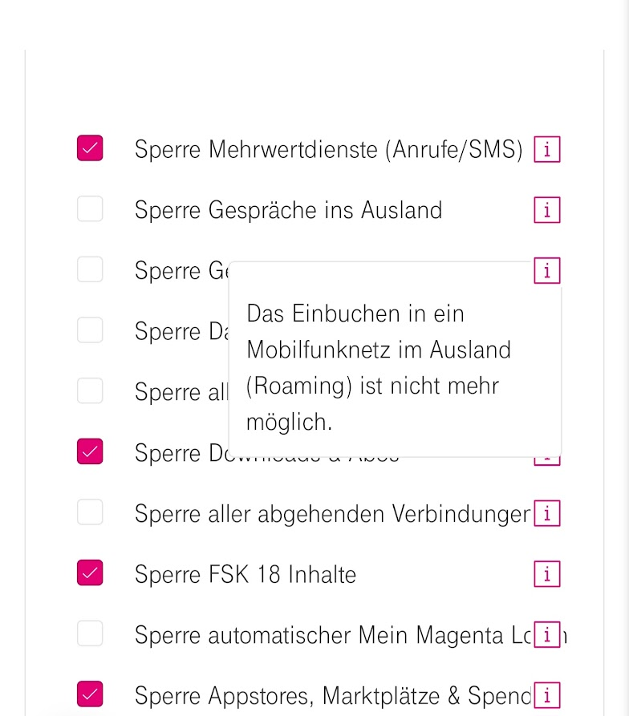

Hallo,
ich kann mich in den USA mit keinem Netz verbinden. Bei den available Networks steht immer forbidden dabei (T-Mobile, Verizon, Firs Net) außer bei At&T nur mit diesem kann ich mich leider auch nicht verbinden.
Ich habe ein One Plus Nord 2. Eingeschränkt habe ich bis auf Data Roaming auf Nein nichts.
Es geht mir Hauptsächlich darum das ich SMS empfangen kann.
Wenn jemande eine Idee hat, wäre ich sehr verbunden.
mfg Sascha
Hallo @SaschaW und willkommen in der Magenta Community,
Hast du dein Smartphone schon neu gestartet? Dadurch sollte sich kleine Fehler im Zwischenspeicher löschen.
Sollte das nicht helfen, schalte bitte dein Smartphone aus und entferne die SIM Karte für ca.10 Minuten und schalte es anschließend mit eingelegter SIM wieder ein.
Kontrolliere bitte auch ob unter Mein Magenta doch eine Aktive Sperre im Ausland für Gespräche aktiv ist, die eine Einbuchen in ein Roamingnetz verhindert. Wenn ja, entferne den Haken.
Grüße,
Rexalius
 Siehe Screenshot:
Bearbeitet von Rexalius2000
Was für einen Tarif hast du denn? (Um sicher zu gehen, dass der Tarif überhaupt Roaming zulässt.)
Solltest du ehemaliger UPC mobile oder tele.ring Kunde sein und noch die alte Sim verwenden kann dies auch zu Problemen beim roaming führen.
Danke für die Vorschläge
@Rexalius2000 Es sind keine Sperren gesetzt außer bei Sperre Datenübertragung im Ausland und Sperre UPC-VoLTE / Problem ist noch immer nach Neustart und auch nach dem entfernen der SIM und dann wieder einlegen da
@NTM Mobile 20 GB i (War damals UPC Kunde) und ich habe auch eine neue T-mobile SIM nach der Übernahme von UPC bekommen
An dem Handy kann es auch nicht liegen, ich habe gerade die SIM von meiner Frau ausprobiert (Amerikanische von MINT) und habe damit normla ins Netz kommen können.
Hallo @SaschaW ,
ich habe hier die EB ausgegraben. Laut diesem hast du 8GB Datenvolumen in der EU. Hast du auch geprüft, ob du noch Freieinheiten hast?
Nicht das du vielleicht aus versehen bereits 8GB verbraucht hast. Kann ja schnell gehen ;-).
LG JD.
Hey @Jonathan Dorian ,
Habe 40 GB und davon 20GB in der EU. Davon habe ich die 20 GB in der EU noch nicht angefangen in diesem Monat.
@NTM habe mich gestern verschaut, ich habe tatsächlich noch eine UPC SIM-Karte im Handy... ich schätze dann werde ich mir wohl eine neue aus Österreich senden lassen müssen. Außer du hast eine Idee für einen Workaround.
vor 11 Minuten schrieb SaschaW:@NTM habe mich gestern verschaut, ich habe tatsächlich noch eine UPC SIM-Karte im Handy... ich schätze dann werde ich mir wohl eine neue aus Österreich senden lassen müssen. Außer du hast eine Idee für einen Workaround.
Dann brauchst du definitiv eine neue Sim, um Roaming nutzen zu können.
Ich hoffe es kann dir jemand die Sim in Empfang nehmen und in die USA weitersenden oder zumindest die SMSs Empfangen und via Messenger oder E-Mail weitersenden.
Habe die neue Sim erhalten und es funktioniert jetzt (nach online Aktivierung der neuen Karte - habe das im ersten Moment nicht gesehen und bin fast wieder abgestanden). Danke für die Tips und die Lösung!
Bearbeitet von SaschaW{kind=link}
{kind=link}